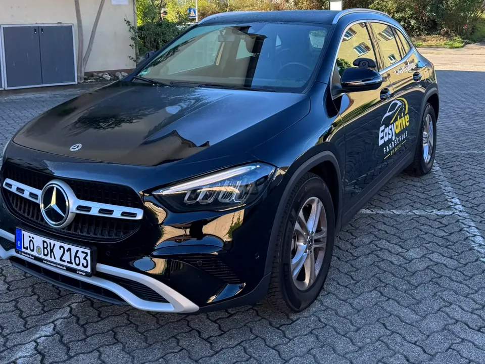

Führerschein in 21 Tagen* – Intensivkurs in Weil am Rhein
Wenig Zeit, klares Ziel: Nach bestandener Theorieprüfung bringen wir dich mit täglichen Fahrstunden und einem festen Plan in drei Wochen zur praktischen Prüfung.
*Voraussetzungen: bestandene Theorieprüfung und vorliegender Prüfauftrag, regelmäßige (in der Regel tägliche) Fahrstunden, verfügbare Prüfungstermine beim TÜV SÜD, Bestehen im ersten Anlauf, Mindestalter erreicht.

So läuft der Intensivkurs
- Vorher
Antrag bei der Führerscheinstelle, Sehtest, Erste-Hilfe-Kurs – wir sagen dir genau, was du brauchst. Die Theorie lernst du kompakt mit unserer App, auf Wunsch auf Englisch oder Türkisch.
- Theorieprüfung
Du bestehst die Theorieprüfung beim TÜV SÜD. Ab jetzt läuft die Uhr: 21 Tage.
- Tag 1–7
Grundlagen: Fahrzeugbedienung, Stadtverkehr in Weil am Rhein und Lörrach, Vorfahrt, Abbiegen, Einparken. Täglich ein bis zwei Fahrstunden.
- Tag 8–16
Die 12 Sonderfahrten: 5 Überlandfahrten durchs Markgräflerland, 4 Autobahnfahrten (A5 und A98), 3 Nachtfahrten.
- Tag 17–20
Prüfungsvorbereitung: Prüfungsstrecken, Prüfungssimulation, letzte Feinheiten – in deiner Sprache erklärt.
- Tag 21
Praktische Prüfung beim TÜV SÜD. Bestanden? Führerschein abholen.
Für wen passt der Intensivkurs?
Schüler und Studierende
Ferien nutzen – bis 5. November 2026 mit 20 % Rabatt für alle durchstarten.Ferien nutzen und mit 15 % Rabatt durchstarten.
Berufstätige
Drei Wochen konzentriert statt Monate zwischen einzelnen Terminen.
Umsteiger und Wiedereinsteiger
Fahrschulwechsel oder lange Pause – wir holen dich dort ab, wo du stehst.
Das brauchst du
- Bestandene Theorieprüfung – wir melden dich an, sobald dein Prüfauftrag vorliegt
- Zeit für ein bis zwei Fahrstunden pro Tag, auch vormittags oder am frühen Abend
- Automatik oder Schaltung – deine Wahl
- Den Willen, drei Wochen dranzubleiben
Warum bei Easydrive?
- Fester Plan mit Datum für jede Fahrstunde
- Unterricht auf Deutsch, Englisch, Türkisch oder Kurdisch
- Automatik ohne Eintrag (B197) auch im Intensivkurs
- 20 % Rabatt für alle, die sich bis 5. November 2026 anmelden15 % Rabatt für Schüler und Studierende
- Ehrliche Beratung: Wenn 21 Tage für dich nicht realistisch sind, sagen wir es – und planen individuell.
Fragen zum Intensivkurs
Kann ich den Intensivkurs ohne Theorieprüfung starten?
Die 21 Tage beginnen mit der bestandenen Theorieprüfung. Davor machst du den Theorieunterricht – das geht kompakt in zwei Wochen oder entspannt nebenher.
Was, wenn ich mehr Fahrstunden brauche?
Dann verlängern wir. Zur Prüfung meldest du dich erst an, wenn dein Fahrlehrer sagt: Du bist bereit. Sicherheit geht vor Tempo.
Gibt es den Intensivkurs auch für BE?
Ja, als Kompaktkurs mit Gespann – frag uns nach freien Terminen.